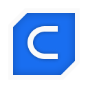
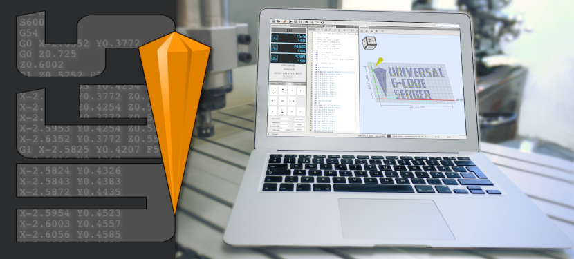

Skills
Tap to view more details.
Automation
 Robot Framework
Robot Framework Python
Python Selenium
Selenium Cypress
Cypress Appium
Appium
AI & Innovation
 GitHub Copilot
GitHub Copilot Microsoft Copilot
Microsoft Copilot- LLM Test Generation
- LLM-based Robot Framework and Python automation generation
- AI Test Analysis
- AI-assisted requirements analysis
- AI Defect Analysis
- Visual Testing
CI/CD
 Jenkins
Jenkins Docker
Docker Git
Git- GitHub
 SourceTree
SourceTree Bitbucket
Bitbucket
Testing
- API Testing
 Postman and REST APIs
Postman and REST APIs- Performance Testing
- Functional Testing
- Regression Testing
- Smoke, load and memory-leak testing
- KPI/stability and alpha/beta testing
- User Acceptance Testing (UAT)
- Test design, test creation and automation architecture
- Test management, bug tracking, continuous integration and code-quality control
Quality Tools
 Jira
Jira- Bugzilla
- Jama
 Confluence
Confluence- TestRail
- PractiTest
- Zephyr
- Kanban
 Pylint
Pylint- Robocop
- Robotidy
Platforms
- Windows
 Linux (Debian)
Linux (Debian) Android
Android- iOS
- POS
- WebOS
- TV
Ways of Working
- Agile
- Waterfall
- Scrum
- Kanban
- SAFe
3D & CNC Automation

Cura SketchUp
SketchUp- OpenBuilds

Universal Gcode Sender